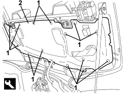

7025D12 HOOD HOUSING COMPARTMENT COVER INNER LINING - R.R.
- Path
- Procedures > 70 FITTINGS > 7025 COMPARTMENT COVERS > 7025D HOOD HOUSING COMPARTMENT COVER > 7025D12 HOOD HOUSING COMPARTMENT COVER INNER LINING - R.R.
- Kind
- repair procedure (removal / refitting; the operation number is the code)
- Applies to
- engines: 2.2 JTS, 3.2 JTS; all production periods
- Interactive page
- https://sloeber94.github.io/elrnDB-aBrrSpdr/en/#/946004077
Applies to: engines: 2.2 JTS, 3.2 JTS; all production periods
 Removing
Removing
 Refitting
Refitting- Prepare the hood for the operation.
Op. 0010T79 HOOD HYDRAULIC SYSTEM - DISCHARGE AND RESTORE PRESSURE
1. Using the electric control, place the 5th arc (1a) in the raised position (as illustrated), the hood housing cover (1b) in the fully raised position and the side covers (flaps) (1c) in a lowered position (as illustrated).

Applies to: engines: 2.2 JTS, 3.2 JTS; all production periods
1. Working on both side covers (1a), rotate the release retainer (1b) in the direction of the arrow (1c) until it is in the unlocked position (1d).
2. Rotate the side covers (1a) upwards until they are in position (2a), then secure them using adhesive bodywork tape.

Applies to: engines: 2.2 JTS, 3.2 JTS; all production periods
1. Release the inner trim rear retaining buttons using the special tool.
Tool | Description | Function | Validity |
|---|---|---|---|
1823015000 | Knife | Retainer removal |
2. Remove the inner trim.

Applies to: engines: 2.2 JTS, 3.2 JTS; all production periods
Refitting
Removing- Check that the inner trim is not damaged.
- Place the inner trim in position and attach the retaining buttons.
- Remove the adhesive tape and lower the side covers.
- If discharged, restore the hood hydraulic system pressure.
Op. 7030H03 HOOD MANUAL OPENING FOLLOWING DEACTIVATION OF HYDRAULIC SYSTEM - CARRY OUT PROCEDURE
- Check that the hood is working correctly.
Topics linked from this page (2)
- 0010T79 HOOD HYDRAULIC SYSTEM - DISCHARGE AND RESTORE PRESSURE
- 7030H03 HOOD MANUAL OPENING FOLLOWING DEACTIVATION OF HYDRAULIC SYSTEM - CARRY OUT PROCEDURE